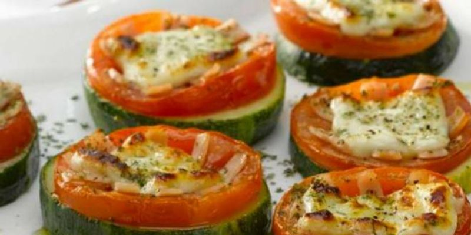

Sandwich de No-Pollo
Delicioso Sandwich de no-pollo ideal para celebraciones o para picnics con tus seres queridos, totalmente vegan.
Leer más

Ricotta de maní
Esta maravillosa ricotta vegana pueden disfrutarla en un aperitivo con unas ricas bruschetas acompañadas de tomatitos cherry y ciboulette.
Leer más

Harina de garbanzos
Este ingrediente tiene diversos usos, ya que puede servir como remplazo de la harina de trigo y servir como espesante en preparaciones en vez del huevo.
Leer más
Ensalada de garbanzos
Exquisita ensalada de garbanzos, con ingredientes frescos para los tiempos de altas temperaturas. Mastica con calma y disfruta cada bocado con amor y agradecimiento
Leer más

Budín de algarroba
La algarroba es un fruto delicioso ideal como sustituto del chocolate, lleno de beneficios nutritivos y propiedades excelentes. Te cuento cómo prepararlo con una exquisita receta.
Leer más

Ceviche de champiñones
Delicioso y fresco ceviche de champiñones, la combinación perfecta para aquellos que quiere probar platos de verano y de la forma más saludable, vegana.
Leer más

Champiñones rellenos
Un plato ideal para los cockteles de invitados o simplemente para las noches de películas, fácil y simple de elaborar. Lo mejor de todo, vegan.
Leer más

Carpaccio de verduras
El carpaccio vegetariano es un plato de entrada muy fresco, ideal para esas personas que no quieren o no pueden consumir proteínas animales. En esta receta, se sustituye la carne por una verdura, siendo un plato muy ligero y fácil de digerir.
Leer más

Pizzetas de zapallo italiano
Increíble receta de pizzetas de zapallo italiano. Ideal para esas noches con ganas de comer algo rico pero que no nos caiga pesado.
Leer más

Croquetas de zanahoria
Maravillosas y simples croquetas de zanahoria, ideal para un almuerzo liviano, rico y nutritivo.
Leer más

Ensalada griega
La ensalada griega es una ensalada elaborada en Grecia con los ingredientes característicos de este país. Pero como somos veganes, la adaptamos :D .
Leer más

Ensalada de quinoa
La ensalada de quinoa es un plato muy nutritivo, saludable y ligero. Es una receta muy fácil y sencilla.
Leer más